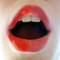

nscpdorm.txt
 social_behavior
social_behavior communications, called, said, said, said, asked, said, mentioned, called, asked, asked, said, said, agreeing, able, meeting, meeting, meeting, meeting, talk, meeting, sales, asked, tell, call, suggestions, said, says, able, helping, called, talked, say, said, said, said, said, explained, approve, talk, conversation, told, said, say, said, tell, imitate, said, message, said, asked, say, able, responses, reply, said, meetings, say, say, meetings, convincing, agreed, remarkably, conversation, mentioned, announced, says, interviewed, confidential, asked, said, helping, says, told, called, promises, says, says, agreed, announcement, message, conference, describing, quote, talking
 sex
sex kissed, fuck, fuck, fuck, fucked, fuck, fuck, fuck, fuck, fuck, fuck, fuck, fucking, fucking
 instrumental_behavior
instrumental_behavior makes, builds, builds, products, work, working, spent, building, working, reached, preparing, work, working, work, work, work, work, marketing, job, worked, make, use, tried, marketroids, bought, job, work, work, work, finish, bought, product, work, traded, found, find, lessons, copy, machines, used, found, picking, picking, make, makes, win, make, goals, working, trying, spend, making, makes, carry, trying, work, making, trying, making, testers, work, works, work, finding, business, spent, trying, work, make, make, bought, work, finished, builds, building, builds, building's, making, attempting, successfully, delivered, money, work, work
 temporal_references
temporal_references during, months, when, when, today, time, old, time, everything, sometimes, daily, month, now, often, today, minutes, when, everyone's, while, time, months, time, again, hours, when, when, time, hours, ago, now, again, today, week, now, time, when, everyone, once, then, hours, previous, ever, soon, time, time, week, ago, then, everyone, every, minutes, when, time-lapse, today, time, months, everything, when, months, hours, hours, while, already, time, every, every, hour, hour, clockwork, clockwork, hours, hours, when, when, today, hours, yesterday, dating, today, previous, once, today, moment, when, today, ever, month's, time, today, while, every, time, today, today, time, when, everyone, every, hour, again, everything, now, months, time, while, time, today, now, today, times, again, weeks, today, today, every, minutes, now, when, every, now, then, today, today, now, hour, hour, hour, then, now, everyone, when, once, now, ever, time, hours, already, now, again, week, immediately
 restraint
restraint managers, control, management, must, stop, must, block, limit, control, limits, stop, must, manager
 anxiety
anxiety worried, terrified, nervous, scary, worry
 random_movement
random_movement twitchy, wave, shake, spin, shakes, twisty, agitated
 passivity
passivity relax, relaxing, decay, death, die, dying
 vision
vision look, see, picture, watching, colormaps, color, see, look, shiny, saw, look, see, lights, glanced, imagery, look, see, see, brightly, visuals, watch, watch, picture, look, look, looking, looking, scenic, view, pictures, film, picture, pink-haired, watch, noticed
 concreteness
concreteness here, back, back, back, middle, here, at, out, off, over, wide, back, over, at, out, away, along, over, at, at, at, long, out, longer, at, at, point, at, at, overwhelmed, behind, away, closed, at, near, out, over, out, middle, out, out, here, at, away, out, inside, inside, at, out, out, at, middle, over, at, at, here, out, nearly, over-the-top, back, place, off, out, inside, pointed, out, long, where, out, at, out, besides, out, out, at, far, at, place, where, overcome, along, out, out, back, out, at, at, surrounded, at, at, here, openwindows, at, out, over, outside, at, center, at, at, middlefinger, longer, over, corner, here, here, out, front, front, out, out, out, out, out, open, space, at, flat, at, at, at, long, between, along, forwarded, at, here, at, at, out, back, at, where, here, points, inside, back, here
 aggression
aggression rob, annoying, annoying, annoy, annoyed, annoyed, annoyed, argue, hurting, crushing, hurt, destroying, killers, blade, beaten, war, beat, argument, hate, beat, annoying, slaughter, shoot, annoyed, beaten, blam, blam, blam, cut, kill, hate, cannon, shot
 voyage
voyage wandered, ship, ship, shipped, wandered, chasing, chase, chase, chase, shipping, drive
 abstraction
abstraction perhaps, probably, understandable, possible, guess, understand, think, know, them, something, guess, figure, something, think, something, think, learned, concentrating, thought, them, think, understand, them, sure, sure, think, something, think, compared, why, difference, guess, true, real, decide, think, something, thought, think, thinks, think, example, thinking, know, basically, think, considering, think, them, them, them, concentrate, mistake, knows, think, think, think, think, guessing, them, fact, them, them, know, think, sure, think, different, fact, truly, probably, truly, suppose, thought
 order
order listing, catalog, classy, order, systems, system, listening
 soft
soft softens, software, feathered
 narcissism
narcissism eyedream, arms, face, face, hands, wrists, hand, hair, skin, body, wrist, body, head, heartily, handful, hair, arms, headphones, eye, skull, body, feet, feet, hair, brain, head, wrist, hand-stamp
 fire
fire burnt, hot, burning, burnt, meltdown
 hard
hard rock, solid, hard, nails, hard, hardware-dependent, rock, hard
 sound
sound heard, ring, sound, heartily, hear, hear, music, bang, ears, ringing, ears, ringing, rattling, noise, sound, listening
 anality
anality sweaty, disgusting, shit, shit, shit, dirt, pissy, mud
 descent
descent fall, dig, dipping, digging
 moral_imperative
moral_imperative right, should, right, right, ought, right, right, properly, right, should, right, right
 consciousness_alteration
consciousness_alteration sleeping, woke, asleep, asleep, woke, dreams, sleep, sleep, sleep, sleep, waking, sleep, insane, sleep, awakened, sleep
 water
water shower, showers, lake, lake, lake
 odor
odor smell, breathing
 depth
depth underneath, under, deep, under
 affection
affection like, kind, like, like, kind, like, kinds, like, like, like, friends, kind, like, like, like, like, like, attractive, attractive, attractive, like, like, love, friends, friends, like, like, like, like, like, kind, like, like, like
brink-passage
floor, frame, step, walls, halloween, door, doors, road, wall, street
 orality
suck, fast, throat, cough, bite, corny, mouth, beer, drunk, drunk, drunk, drunken, sucky, corner, grainy, teeth, toothdreams, food, dinner, food
 diffusion
diffusion blurted, mistake
 expressive_behavior
expressive_behavior played, games, scream, playing, cry, yelled, screams, played
 height
height high, hung, top, top, mountain, birds
 ascent
ascent bounce, mountain, mounted
communications, called, said, said, said, asked, said, mentioned, called, asked, asked, said, said, agreeing, able, meeting, meeting, meeting, meeting, talk, meeting, sales, asked, tell, call, suggestions, said, says, able, helping, called, talked, say, said, said, said, said, explained, approve, talk, conversation, told, said, say, said, tell, imitate, said, message, said, asked, say, able, responses, reply, said, meetings, say, say, meetings, convincing, agreed, remarkably, conversation, mentioned, announced, says, interviewed, confidential, asked, said, helping, says, told, called, promises, says, says, agreed, announcement, message, conference, describing, quote, talking